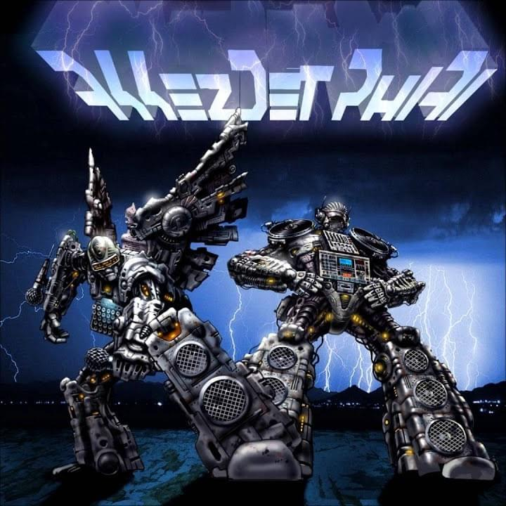
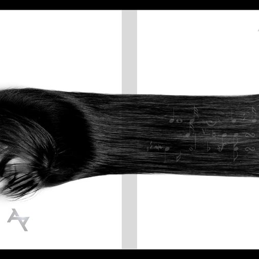

Aktív évek: 1996-2018
Tagok:
A formáció tagjai, Saiid (Süveg Márk) és Újonc (Závada Péter) 1996-ban álltak össze, akkor még Higher Tone Alliance néven. Saiid akkor már dj-ként foglalatoskodott, ez idő tájt kezdett el zenéket szerkeszteni, így indult a közös munka, először csak zeneszerzéssel foglalkoztak, fél év múlva angolul kezdtek el dalszövegeket írni, ezekből felvételek soha nem készültek végül.
Később úgy döntöttek, magyar nyelvre váltanak, így 1999-ben Akkezdet Phiai néven alakultak újjá. Ekkor olyan demófelvételek készültek, mint a később hivatalosan is megjelent albumon található Phasskivan, Tartsdmegatávot, Újítanék.
A demóanyag gyorsan terjedt, így meghívást kaptak Györemix! rádióműsorába (Rocksteady Beat - estFM), aminek köszönhetően egyetlen éjszaka alatt megismerte őket mindenki, aki akkoriban a fővárosban hiphopot hallgatott.
2003-ban szerzői kiadásban jelent meg első albumuk: "Akkezdet". Az első magyar hiphoplemez, amiben szövegkönyv található. A zenék tetemes részét Saiid készítette, ebben segítségére volt még Fari a Streetnoyz tagjaként, az ő nevéhez fűződik a Van Gond c. szám zenei alapja. A korongot Saiid producerálta, a lemez felvételeiben Györemix! ajánlására Bobakrome segédkezett, így végül rákerült a Wacuum Airs fémjele. A lemez elsöprő sikert aratott mind a kritikusok, mind a hallgatóság köreiben, bekerült a "300 magyar lemez, amit hallanod kell, mielőtt meghalsz" válogatásra, ebben ez évben a legjobb filmzenéért járó zsűrikülöndíjat hozták el az 52. Alternatív Filmszemlén.
2010-ben jelent meg a második album, a Kottazűr. A dupla korongon található zenék háromnegyedét szintén Saiid készítette, a vendégproducerek Cadik, DJ Slow (Slow Village), Krizo és Chabz (Realistic Crew), valamint Kunert Péter (Sadant) voltak. A felvételek és a keverés a Pannónia Stúdióban készültek Róbert Balázs vezetésével, az album a DDK Records gondozásában látott napvilágot.
2019. január 1-jén jelentették be feloszlásukat a hivatalos Facebook-oldalukon.
 Két megjelent albumuk borítója, balra ,,Akkezdet" (2003), jobbra pedig a ,,Kottazűr" (2010)